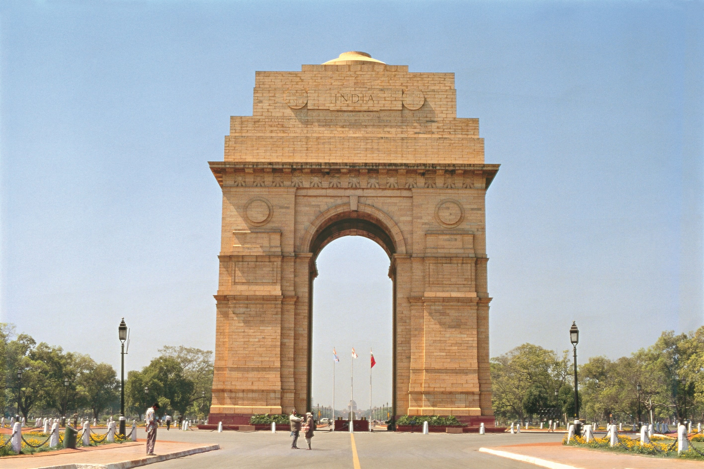
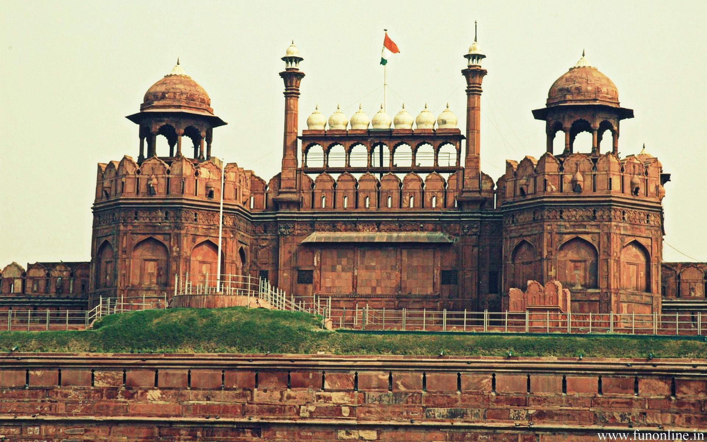
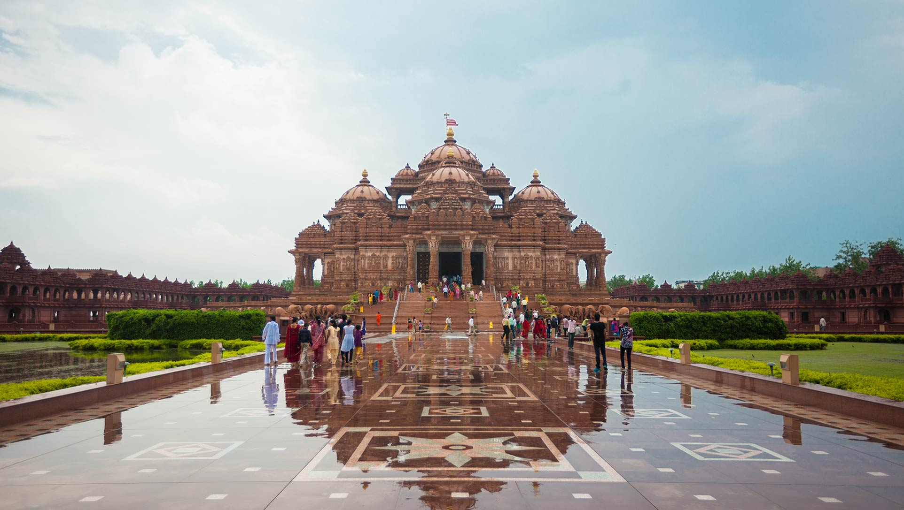
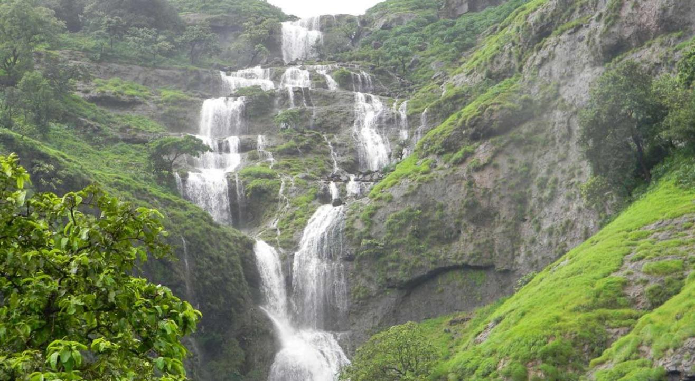
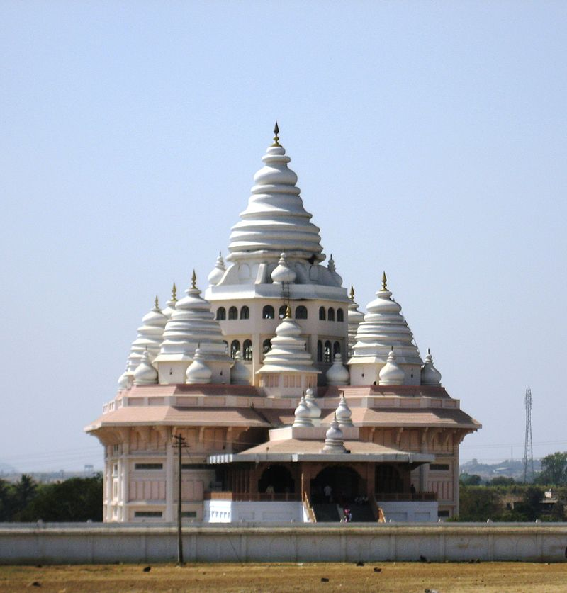

Delhi
The captivating capital
With old monuments and busy neighbourhoods subtly merging with a vibrant and contemporary cosmopolitan world, Delhi, the capital of India, is a fascinating tourist destination. Poised along the banks of River Yamuna, Delhi, which is almost 1,000 years old, offers a mesmeric mosaic of experiences, both heritage and contemporary. While the former honour the elegant ageing of centuries-old Delhi, the latter reiterate that the capital is the heart of Indian democracy, and can keep pace with the most advanced of the metropolitans of the world.
Attractions
India Gate
A stunning archway standing as a tribute to the brave soldiers who sacrificed their lives for the country, India Gate is one of the landmarks of Delhi. Built with sandstone, this 42-m-high gate was the first of its kind in the national capital.
Red Fort
Lying at the heart of Delhi, the majestic Red Fort, made of fine red sandstone, stands as a testament to the architectural legacy of the Mughals.
Akshardham
olding the Guinness World Records as the world's largest comprehensive Hindu temple, the Akshardham temple complex is a stunning piece of architecture.
Mumbai
The City of Dreams
Mumbai, the capital of Maharashtra, attracts dreamers with sky-high ambitions from every corner of the country. It is a unique place where the past is mixed with the future and history meets modernity, a city that lies at the cross section of business and entertainment and beats to a pulsating rhythm of its own. Located by the Arabian Sea, Mumbai is an amalgamation of heritage and culture and glitz and glamour. So from historic art deco buildings, which are recognised by the UNESCO, to plush new-age homes of the super rich, Mumbai has it all!
Attractions
Chhatrapati Shivaji Maharaj Terminal

A monument of significant historical importance that houses one of the finest railway stations in the world, the Chhatrapati Shivaji Maharaj Terminus sees a footfall of over 3 million daily.
Bhandardara
A beautiful village nestled amongst the vast and green hilly ranges of the Western Ghats, Bhandardara is a trekker’s paradise. With its bright blue skies, green paddy fields, cascading waterfalls and surrounding blue-green hills, this quaint hamlet acts as a perfect retreat for families seeking to escape the bustle of the city for a long weekend.
Vasai Fort

The city of Mumbai lies on the coastline of Maharashtra and to protect it, many forts were constructed in its long history. One of those is the Vasai Fort, also known as Bassein Fort, significant militarily to oversee the surrounding areas of Mumbai
Pune
The Oxford of the East
Comprising seven states, known as the Seven Sisters, along with the inclusion of Sikkim, Northeast India is known for its interesting tribal cuisine and beverage culture, which hasn’t changed much since the medieval period.
Attractions
Aga Khan Palace

Occupying an area of about 19 acre, this palatial mansion was once used as a prison by the British for Mahatma Gandhi, Kasturba Gandhi and Mahadeo Desai, as well as Miraben, Pyarelal Nair, Sarojini Naidu and Dr Sushila Nayar.
Bhimashankar Temple

Dedicated to Lord Shiva, the Bhimashankar Temple is sixth among the 12 jyotirlingas (devotional shrines of Lord Shiva) in India. Rajasthani and Gujarati influences can be clearly seen in the Nagara (or Indo-Aryan) architectural style of the garbha griha (sanctum sanctorum) and shikahara (tower) of the temple.
Dehu
The birthplace of Saint Tukaram Maharaj, a Hindu poet, Dehu is around 35 km from Pune. It is located on the banks for River Indrayani. The Dehu Gatha Temple, built in 1723, is a must-visit.